viewof innerRadius = Inputs.range([0.4, 1.6], {value: 0.8, step: 0.05, label: "Inner radius r1"})
viewof outerRadius = Inputs.range([1.2, 2.4], {value: 1.7, step: 0.05, label: "Outer radius r2"})
viewof ringNoise = Inputs.range([0.02, 0.25], {value: 0.08, step: 0.01, label: "Radial noise"})
viewof rawLineAngle = Inputs.range([-80, 80], {value: 25, step: 1, label: "Example linear boundary angle"})
viewof rawLineOffset = Inputs.range([-1.5, 1.5], {value: 0, step: 0.05, label: "Example linear boundary offset"})Mathematical Foundations of AI & ML
Unit 4: Neural Network Architectures and Convolutions
Prof. Dr. Philipp Pelz
FAU Erlangen-Nürnberg


Where we are in the triad
Just done (Unit 3):
- Supervised learning as loss minimization.
- Linear and generalized linear models.
- Fixed feature maps \(\boldsymbol\phi(\mathbf{x})\).
- Optimization as the engine behind fitting.
Today:
- Replace fixed features with learned representations.
- Understand why dense MLPs struggle with images.
- Derive convolution from locality and translation equivariance.
- Build the vocabulary for modern CNN architectures.
The big leap
- Unit 3 used \(f_{\mathbf{w}}(\mathbf{x}) = \mathbf{w}^T\boldsymbol\phi(\mathbf{x})\): a linear model on fixed features.
- Neural networks make \(\boldsymbol\phi\) learnable by composing layers.
- For tabular data, dense layers are often a reasonable first architecture.
- For images, spectra, and spatial fields, dense layers ignore what we already know: nearby pixels matter, patterns can move, and features are hierarchical.
- CNNs build those assumptions into the architecture.
Fixed bases we already know
Before learning features, we often choose a basis by hand:
\[ f_{\mathbf{w}}(\mathbf{x}) = \sum_{j=1}^M w_j\,\phi_j(\mathbf{x}). \]
- Fourier bases: global oscillatory patterns.
- Wavelet bases: localized multiscale patterns.
- GLM / polynomial bases: engineered non-linear coordinates for a linear model.
- The limitation is not linearity alone; it is that \(\phi_j\) is fixed before seeing the task.
Example: Fourier basis on a \(16\times16\) image
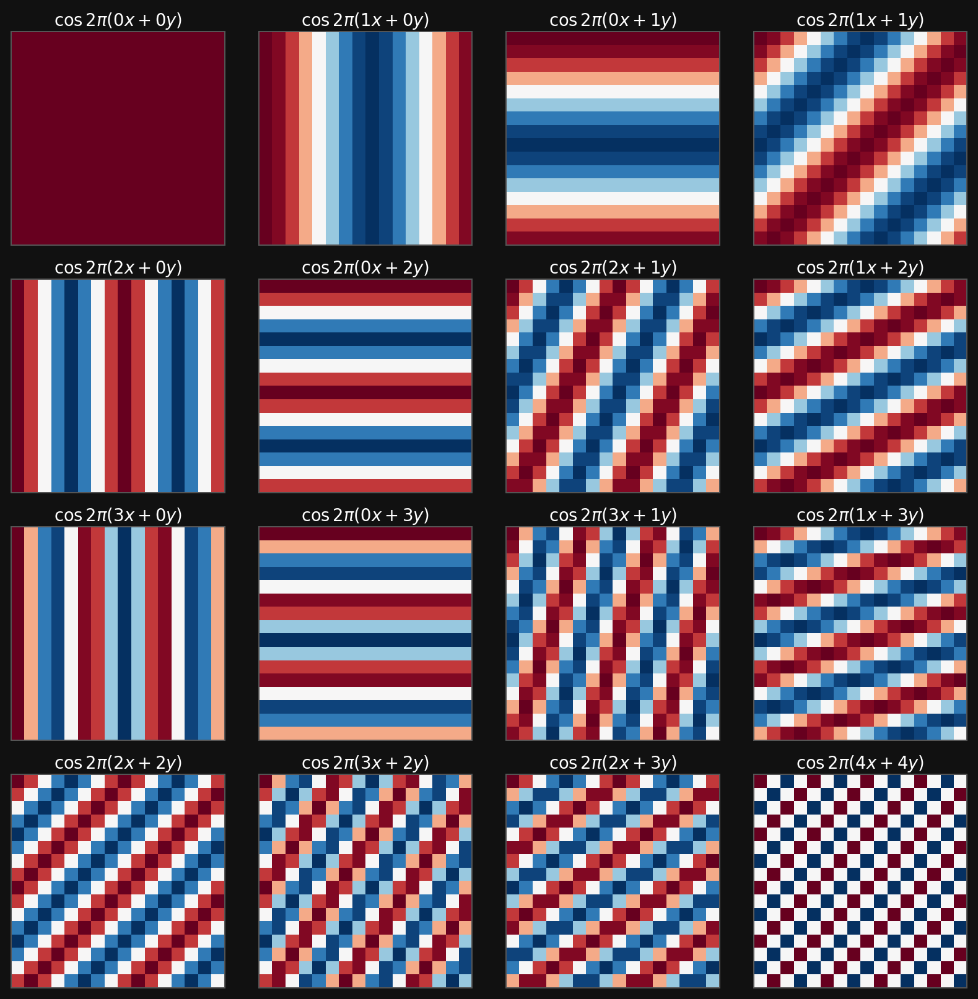
Real Fourier atoms on a 16 by 16 grid
Fourier features are excellent when the signal is naturally decomposed into global frequencies. They are less natural for localized edges, defects, and spatial motifs.
Example: DWT / Haar wavelet basis
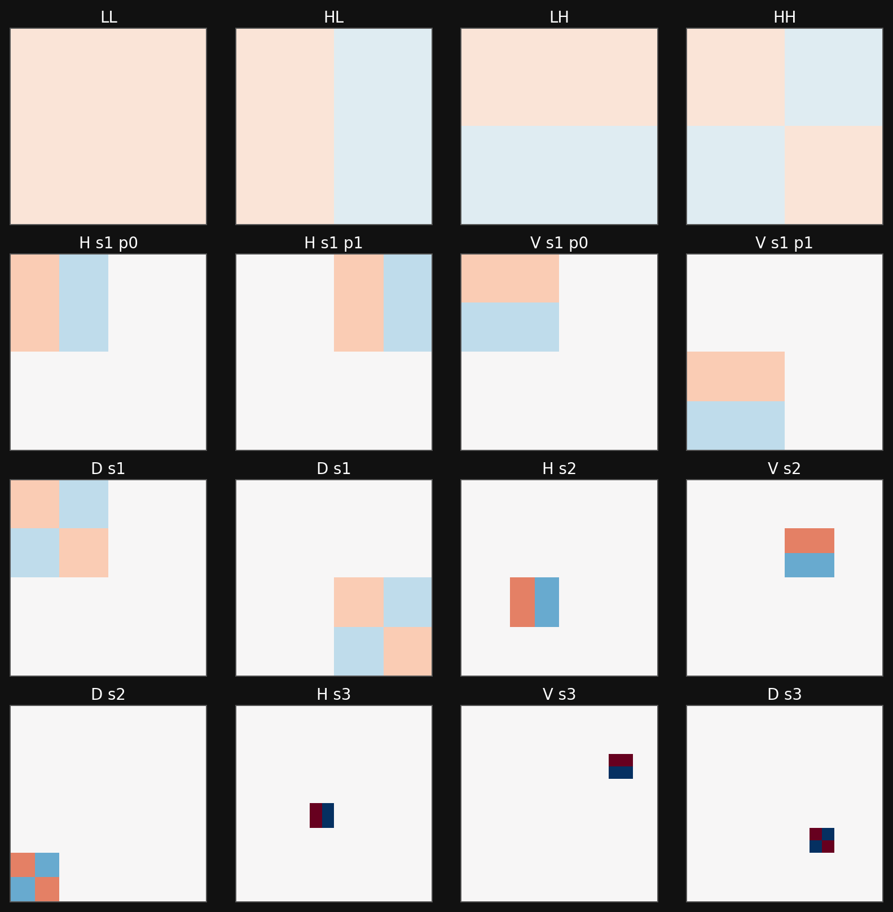
Haar wavelet atoms on a 16 by 16 grid
Wavelets add locality and scale. This is already closer to images: a feature can live in one region and at one resolution.
Example: polynomial basis for a GLM
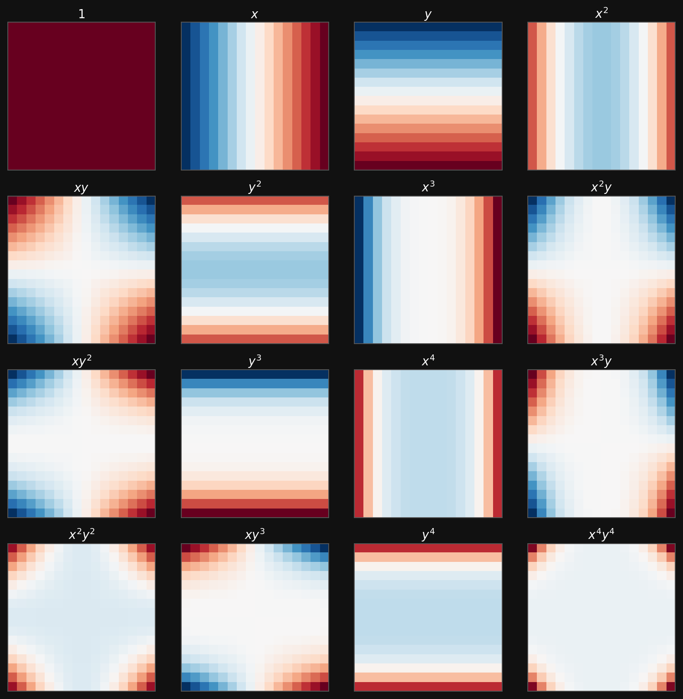
Polynomial basis functions on a 16 by 16 grid
Polynomial features make a linear model non-linear in the original coordinates, but the feature map is still chosen by the engineer.
The next step: learn the basis
Fixed-basis model
\[ \hat{y} = \sum_j w_j\,\phi_j(\mathbf{x}) \]
- Choose \(\phi_j\) first.
- Learn only the coefficients \(w_j\).
- Works well when the right basis is known.
Neural-network model
\[ \hat{y} = g_{\theta}\bigl(\mathbf{x}\bigr) = \sum_j v_j\,\phi_j(\mathbf{x};\theta) \]
- Learn the feature map from data.
- Coefficients and basis adapt together.
- Architecture decides what kinds of bases are easy to learn.
Roadmap
- Minimal neural-network foundations.
- Why dense MLPs are not enough for images.
- Convolution from first principles.
- Kernels, feature maps, and receptive fields.
- Channels, padding, stride, and pooling.
- Architecture motifs: LeNet/VGG, NiN, DenseNet, U-Net.
- What CNNs buy us, and what they do not solve.
- Forward links to backpropagation and optimization.
From historical neuron to modern layer
Historical arc, compressed:
- MCP neurons made Boolean threshold logic explicit.
- Perceptrons added signed weights and a bias.
- ADALINE moved the error signal before the threshold, making gradient-based learning natural.
- MLPs stack many such units with non-linearities.
Modern view:
A neural network is a parameterized composition of simple maps:
\[ \mathbf{x} \mapsto W^{(1)}\mathbf{x}+\mathbf{b}^{(1)} \mapsto \sigma(\cdot) \mapsto \cdots \mapsto \hat{\mathbf{y}}. \]
The historical names matter less than the compositional structure.
A dense layer
A layer with input width \(D\) and output width \(M\) computes
\[ \mathbf{z} = W\mathbf{x} + \mathbf{b}, \qquad \mathbf{a} = \sigma(\mathbf{z}), \]
where
| Object | Shape |
|---|---|
| input \(\mathbf{x}\) | \(D \times 1\) |
| weights \(W\) | \(M \times D\) |
| bias \(\mathbf{b}\) | \(M \times 1\) |
| activation \(\mathbf{a}\) | \(M \times 1\) |
For a batch \(X \in \mathbb{R}^{D\times N}\), the same layer is \(A=\sigma(WX+\mathbf{b})\), with the bias broadcast across samples.
Why non-linearity is non-negotiable
- Stack two linear maps: \[ \mathbf{a}^{(2)} = W^{(2)}(W^{(1)}\mathbf{x}+\mathbf{b}^{(1)})+\mathbf{b}^{(2)}. \]
- Rearrange: \[ \mathbf{a}^{(2)} = (W^{(2)}W^{(1)})\mathbf{x}+\tilde{\mathbf{b}}. \]
- So two linear layers collapse into one linear layer.
- By induction, any depth of purely linear layers has the expressivity of a single affine map.
- Non-linear activations are what make depth meaningful.
Activation functions: what we need today
| Activation | Formula | Typical role | Main caution |
|---|---|---|---|
| Identity | \(z\) | regression output | no hidden-layer expressivity alone |
| Sigmoid | \((1+e^{-z})^{-1}\) | binary output | saturates, not hidden default |
| Tanh | \(\tanh z\) | older hidden layers | saturates at both tails |
| ReLU | \(\max(0,z)\) | hidden default | zero gradient for \(z<0\) |
| Leaky ReLU / GeLU | smooth or leaky gates | modern hidden variants | architecture and optimizer dependent |
| Softmax | \(e^{z_j}/\sum_k e^{z_k}\) | multi-class output | use with cross-entropy |
Today we only need the rule: hidden layers need non-linear activations; output activations must match the target range and loss.
Interactive: warping rings into separable data
Raw coordinates \((x_1,x_2)\) contain two concentric classes. A straight line cuts through both rings.
The feature map
\[ \phi(\mathbf{x}) = \bigl(x_1,\; x_1^2+x_2^2\bigr) \]
turns radius into a coordinate, so a linear threshold separates the rings.
ringData = {
let seed = 7;
function rand() {
seed = (1664525 * seed + 1013904223) >>> 0;
return seed / 4294967296;
}
function randn() {
const u = Math.max(rand(), 1e-12);
const v = rand();
return Math.sqrt(-2 * Math.log(u)) * Math.cos(2 * Math.PI * v);
}
const pts = [];
for (const [label, radius] of [["inner ring", innerRadius], ["outer ring", outerRadius]]) {
for (let i = 0; i < 120; i++) {
const angle = 2 * Math.PI * rand();
const r = Math.max(0.05, radius + ringNoise * randn());
const x = r * Math.cos(angle);
const y = r * Math.sin(angle);
pts.push({x, y, rho: x*x + y*y, class: label});
}
}
return pts;
}
ringThreshold = (innerRadius*innerRadius + outerRadius*outerRadius) / 2
rawSlope = Math.tan(rawLineAngle * Math.PI / 180)
rawBoundary = [
{x: -2.6, y: rawSlope * -2.6 + rawLineOffset},
{x: 2.6, y: rawSlope * 2.6 + rawLineOffset}
]
rawRingPlot = Plot.plot({
width: 560,
height: 420,
marginLeft: 55,
marginBottom: 45,
x: {domain: [-2.7, 2.7], grid: true, label: "x1"},
y: {domain: [-2.7, 2.7], grid: true, label: "x2"},
color: {domain: ["inner ring", "outer ring"], range: ["#4ea3ff", "#ff6b6b"], legend: true},
marks: [
Plot.ruleX([0], {stroke: "#666"}),
Plot.ruleY([0], {stroke: "#666"}),
Plot.dot(ringData, {x: "x", y: "y", fill: "class", r: 4, fillOpacity: 0.85}),
Plot.line(rawBoundary, {x: "x", y: "y", stroke: "white", strokeWidth: 3, strokeDasharray: "8 6"})
]
})
warpedRingPlot = Plot.plot({
width: 560,
height: 420,
marginLeft: 70,
marginBottom: 45,
x: {domain: [-2.7, 2.7], grid: true, label: "x1"},
y: {domain: [0, 6.0], grid: true, label: "rho = x1^2 + x2^2"},
color: {domain: ["inner ring", "outer ring"], range: ["#4ea3ff", "#ff6b6b"], legend: false},
marks: [
Plot.dot(ringData, {x: "x", y: "rho", fill: "class", r: 4, fillOpacity: 0.85}),
Plot.ruleY([ringThreshold], {stroke: "white", strokeWidth: 3, strokeDasharray: "8 6"}),
Plot.text([{x: -2.2, y: ringThreshold + 0.25, text: "linear threshold after warp"}],
{x: "x", y: "y", text: "text", fill: "white", fontSize: 15})
]
})
html`<div style="display: flex; gap: 18px; align-items: center;">${rawRingPlot}${warpedRingPlot}</div>`Dense networks learn features
- A first hidden layer maps raw inputs to learned features.
- Later layers recombine those features into more abstract features.
- Universal approximation tells us that sufficiently wide MLPs can represent many functions (Goodfellow et al. 2016).
- But expressivity alone does not answer the engineering question: which architecture makes the right functions easy to learn?
- For images and spatial signals, dense MLPs spend parameters learning structure we already know.
The dense image problem
Suppose an image has \(1000\times1000\) pixels and a dense hidden layer has \(1000\) neurons.
\[ D = 10^6, \qquad M = 10^3, \qquad \#W = MD = 10^9. \]
- One dense layer already has one billion weights before any depth.
- It treats the top-left pixel and bottom-right pixel as unrelated input coordinates.
- It must relearn the same edge detector at every possible location.
- This is wasteful for images, microscopy fields, diffraction patterns, and spatial simulation outputs.
What we know about images
Locality
Nearby pixels are strongly related. Early features should inspect local neighborhoods.
Translation equivariance
If a pattern shifts in the input, the corresponding response should shift in the feature map.
Hierarchy
Edges combine into motifs; motifs combine into shapes; shapes combine into objects or material structures.
CNNs are dense layers with these assumptions built in as constraints.
Invariance vs equivariance
Translation equivariance
A shifted input produces a shifted response:
\[ T_\delta f(\mathbf{x}) = f(T_\delta \mathbf{x}). \]
This is what convolutional feature maps provide.
Translation invariance
A shifted input produces the same final decision:
\[ g(T_\delta \mathbf{x}) = g(\mathbf{x}). \]
This is usually built gradually with pooling, striding, aggregation, or global average pooling.
From dense image layer to local layer
For an image \(X\) and hidden map \(H\), the most general dense linear layer is
\[ H_{i,j} = U_{i,j} + \sum_k\sum_l W_{i,j,k,l}X_{k,l}. \]
- Every output location \((i,j)\) can use every input location \((k,l)\).
- Parameter count scales like output pixels \(\times\) input pixels.
- To impose locality, allow \(H_{i,j}\) to use only pixels near \((i,j)\): \[ H_{i,j} = U_{i,j} + \sum_a\sum_b V_{i,j,a,b}X_{i+a,j+b}. \]
Weight sharing gives convolution
Now impose that the same local detector is used at every location:
\[ U_{i,j} = u, \qquad V_{i,j,a,b}=V_{a,b}. \]
Then
\[ \boxed{ H_{i,j} = u + \sum_a\sum_b V_{a,b}X_{i+a,j+b} } \]
This is the convolutional layer idea: local receptive fields plus shared weights.
Parameter economy
For a single output channel from a single input channel:
| Layer type | Parameters |
|---|---|
| Dense image-to-image map | \(h_{out}w_{out}h_{in}w_{in}\) |
| Local but unshared map | \(h_{out}w_{out}k_hk_w\) |
| Convolutional map | \(k_hk_w + 1\) |
A \(5\times5\) convolution uses 25 weights plus one bias per output channel. The same detector is evaluated across the image.
Convolutional design principles
- Locality
- Early layers inspect small neighborhoods.
- Larger context emerges through depth.
- Weight sharing
- One kernel detects the same pattern everywhere.
- Reduces parameters and improves data efficiency.
- Channel mixing
- Many kernels run in parallel.
- Each output channel is a learned feature map.
- Hierarchy
- Later layers compose earlier features.
Cross-correlation: the operation used in CNNs
In strict mathematics, convolution flips the kernel:
\[ (f*g)(i,j)=\sum_a\sum_b f(a,b)g(i-a,j-b). \]
CNN libraries usually implement cross-correlation:
\[ H_{i,j}=\sum_a\sum_b K_{a,b}X_{i+a,j+b}. \]
Because \(K\) is learned, the distinction rarely matters in neural networks. We still call the layer a convolutional layer.
Sliding-window view
Two-dimensional cross-correlation operation
- A small kernel slides across the input.
- At each location: multiply overlapping entries and sum.
- The output is a spatial map of detector responses.
- Add a bias and apply a non-linearity to get a convolutional activation map.
A hand-computable filter
A horizontal difference kernel
\[ K = \begin{bmatrix}1 & -1\end{bmatrix} \]
responds strongly where neighboring pixels change.
If a row is constant:
\[ [1,1,1,1] \star [1,-1] = [0,0,0]. \]
If a row has an edge:
\[ [1,1,0,0] \star [1,-1] = [0,1,0]. \]
Learned CNN filters generalize this idea: they discover useful local detectors instead of receiving them by hand.
Feature maps
- A kernel is a learned local detector.
- A feature map is the detector response at all spatial positions.
- Multiple kernels produce multiple feature maps.
- Stacking feature maps gives a tensor representation with shape \[ C_{out}\times H_{out}\times W_{out}. \]
- In microscopy, feature maps may respond to edges, atomic columns, defects, texture, or phase boundaries.
Receptive fields
The receptive field of an output activation is the input region that can influence it.
- One \(3\times3\) convolution: local \(3\times3\) view.
- Two stacked \(3\times3\) convolutions: effective \(5\times5\) view.
- Three stacked \(3\times3\) convolutions: effective \(7\times7\) view.
Why this matters:
- Deep CNNs grow context gradually.
- Small kernels keep parameters low.
- Non-linearities between kernels make the result richer than one large linear filter.
Hierarchy of learned features
- Layer 1: simple contrasts, edges, gradients, local textures.
- Layer 2: motifs such as corners, grains, pores, peaks, local lattice distortions.
- Layer 3+: object parts or material structures such as defects, precipitates, cracks, phase clusters.
- This is why CNNs match spatial scientific data: the architecture mirrors the structure of the signal (McClarren 2021).
Multiple channels
Real image-like inputs are not just matrices:
\[ X \in \mathbb{R}^{C_{in}\times H\times W}. \]
A convolutional layer with \(C_{out}\) output channels uses kernels
\[ K \in \mathbb{R}^{C_{out}\times C_{in}\times k_h\times k_w}. \]
The output is
\[ H \in \mathbb{R}^{C_{out}\times H_{out}\times W_{out}}. \]
For electron microscopy or spectroscopy, channels might be RGB-like channels, detector channels, energy windows, tilt slices, or learned feature channels.
Multi-channel convolution formula
For output channel \(d\):
\[ H_{d,i,j} = b_d + \sum_{c=1}^{C_{in}}\sum_a\sum_b K_{d,c,a,b}X_{c,i+a,j+b}. \]
- Sum over spatial kernel offsets \((a,b)\).
- Sum over input channels \(c\).
- Repeat for every output channel \(d\).
- Each output channel learns a different mixture of local spatial patterns and input channels.
Shape checklist
For input \(C_{in}\times H\times W\), kernel \(C_{out}\times C_{in}\times k_h\times k_w\), padding \(p_h,p_w\), and stride \(s_h,s_w\):
\[ H_{out} = \left\lfloor\frac{H + 2p_h - k_h}{s_h}\right\rfloor + 1, \qquad W_{out} = \left\lfloor\frac{W + 2p_w - k_w}{s_w}\right\rfloor + 1. \]
Parameter count is \(C_{out}(C_{in}k_hk_w + 1)\) including biases.
Padding
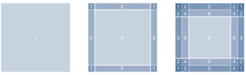
Pixel utilization for different convolution sizes
- Without padding, borders are used less often and spatial dimensions shrink.
- Zero padding adds a frame around the image.
- With odd kernel size \(k\) and padding \(p=(k-1)/2\), stride 1 preserves height and width.
- Padding is a design choice: it changes boundary assumptions.
Stride
Cross-correlation with strides of 3 and 2
- Stride controls how far the kernel moves between evaluations.
- Larger stride reduces spatial resolution.
- Strided convolutions can replace or complement pooling.
- Downsampling increases the effective receptive field of later layers.
Pooling
Max-pooling with \(2\times2\) window
- Pooling has no learned weights.
- Max pooling keeps the strongest local response.
- Average pooling smooths local neighborhoods.
- Pooling reduces resolution and makes the representation less sensitive to small shifts.
- Modern CNNs often use strided convolution or global average pooling instead of many pooling layers.
\(1\times1\) convolution
\(1\times1\) convolution with 3 input and 2 output channels
A \(1\times1\) convolution does not mix neighboring pixels. It mixes channels at each location:
\[ H_{d,i,j} = b_d + \sum_{c=1}^{C_{in}}K_{d,c,1,1}X_{c,i,j}. \]
It is a small fully connected layer applied independently at every pixel. This is cheap channel mixing.
Convolution as a sparse matrix
- A convolution is still a linear map before the activation.
- If we flatten the input image, convolution can be written as multiplication by a large sparse matrix.
- Locality creates zeros in most matrix entries.
- Weight sharing ties many nonzero entries to the same parameter.
- This view connects CNNs back to the linear algebra of Unit 3 while explaining why CNNs are far more parameter efficient.
From layers to blocks
- Early neural networks were described layer by layer.
- Modern CNNs are built from repeated blocks.
- A block packages a local design pattern: convolution, activation, normalization, pooling, skip connection, or channel mixing.
- Blocks make networks deeper while keeping the design understandable.
LeNet: the classical CNN template
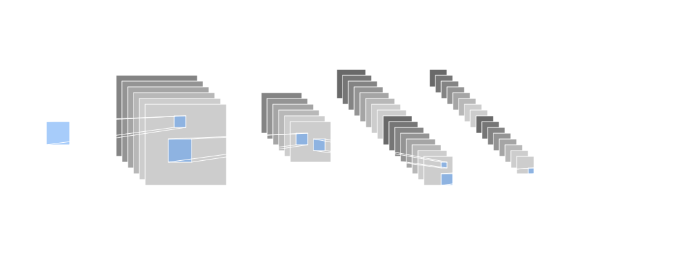
LeNet architecture
- Alternates convolutional feature extraction and spatial downsampling.
- Ends with dense layers for classification.
- Still captures the basic CNN recipe: local filters, feature maps, pooling, classifier head.
VGG: deep networks from repeated blocks
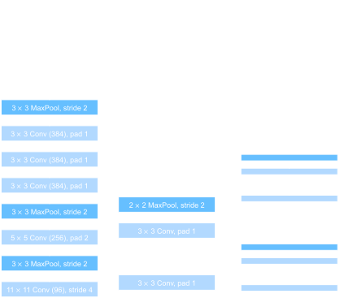
From AlexNet to VGG
VGG block idea:
- Use repeated \(3\times3\) convolutions.
- Keep spatial size with padding.
- Downsample after several convolutions.
Why it matters:
- Two \(3\times3\) layers see roughly a \(5\times5\) receptive field.
- Three see roughly \(7\times7\).
- Non-linearities between small filters beat one large linear filter.
Network in Network: channel mixing
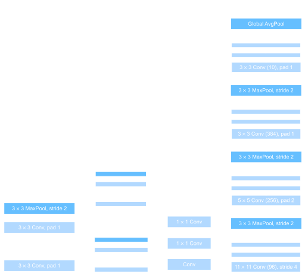
Comparing VGG and NiN architectures
- NiN replaces large dense classifier heads with local channel mixing.
- \(1\times1\) convolutions act like per-pixel MLPs.
- Global average pooling converts feature maps into class scores.
- This reduces parameters and strengthens the connection between feature maps and predictions.
DenseNet: feature reuse
DenseNet connections
- Each layer receives earlier feature maps as additional input.
- Instead of adding features, DenseNet concatenates them.
- This encourages feature reuse and improves gradient flow.
- The broader motif is more important than the specific architecture: deep networks need paths that let information and gradients move easily.
Dense blocks and transitions
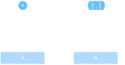
DenseNet block
Dense block:
- Preserve earlier features.
- Add new feature channels at each layer.
- Concatenate along the channel axis.
Transition layer:
- Mix channels with \(1\times1\) convolution.
- Downsample spatially.
- Keep the total computation bounded.
U-Net: encoder-decoder for dense prediction
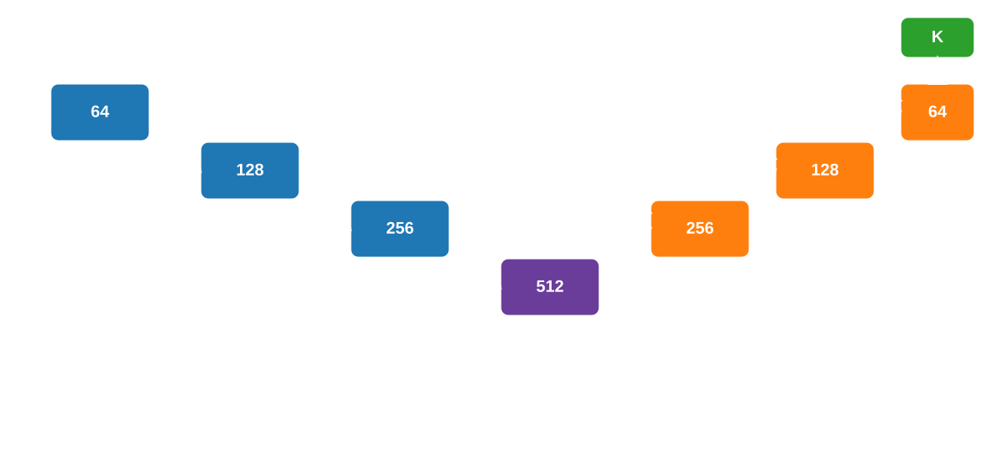
U-Net encoder-decoder schema
Classification head:
Many CNNs compress the image to one prediction:
\[ C\times H\times W \rightarrow K. \]
Good for labels like “phase present” or “defect class”.
Segmentation head:
U-Net-like models predict at every location:
\[ C\times H\times W \rightarrow K\times H\times W. \]
Good for masks, defect maps, and pixel-level structure labels.
U-Net motif
Encoder path
- Convolutions extract features.
- Downsampling increases context.
- Channels usually increase as resolution decreases.
Decoder path
- Upsampling restores resolution.
- Skip connections bring back fine spatial details.
- Final layer predicts a map, not a single label.
The main lesson: architecture follows the task. Classification can discard spatial detail; segmentation must preserve and recover it.
Architecture motif checklist
| Motif | Main purpose | Typical place |
|---|---|---|
| \(3\times3\) convolution | local spatial feature extraction | most CNN blocks |
| ReLU/GeLU | non-linear feature composition | after linear/convolutional maps |
| Padding | preserve spatial size | before/inside convolution |
| Stride/pooling | downsample and grow context | between stages |
| \(1\times1\) convolution | channel mixing, bottlenecks | within blocks |
| Skip/concat connections | information and gradient flow | deep networks |
| Global average pooling | map feature maps to labels | classifier head |
| Upsampling + skips | dense spatial prediction | segmentation heads |
Why CNNs fit microscopy and materials data
- Local neighborhoods carry physical meaning: atomic columns, grains, defects, interfaces, pores.
- Similar motifs appear at different spatial locations.
- Multi-channel measurements are common: energy channels, detector geometry, polarization, tilt, time, or simulated fields.
- The relevant features are often hierarchical: local contrast -> motif -> structure -> property.
- CNNs encode this hierarchy more naturally than dense MLPs.
TODO example images here
Example architecture choices
Micrograph classification
- Input: SEM or TEM image.
- Use: convolutional encoder.
- Head: global pooling + class logits.
- Goal: one label per image.
Defect segmentation
- Input: image or spectral image.
- Use: U-Net-like encoder-decoder.
- Head: per-pixel logits.
- Goal: mask or defect probability map.
Spectral-spatial regression
- Input: channels over space.
- Use: CNN backbone plus regression head.
- Head: linear or physically constrained output.
- Goal: local property or global scalar.
What CNNs do not solve by themselves
- They do not remove the need for good training data.
- They do not decide the correct loss function.
- They do not guarantee optimization will succeed.
- They do not automatically generalize across microscopes, domains, or sample preparation protocols.
- They do not replace physical reasoning; they encode useful priors into a learnable model.
CNN design checklist
Summary: the architectural decisions of a CNN
| Decision | Driver | Consequence |
|---|---|---|
| Kernel size | local pattern scale | parameters and receptive field |
| Channel count | feature diversity | capacity and compute |
| Padding | boundary assumptions | output size and border behavior |
| Stride/pooling | downsampling rate | resolution vs context |
| Depth | hierarchy level | abstraction and trainability |
| Skip connections | information flow | easier deep optimization |
| Head type | task structure | classification, regression, segmentation |
Forward links
- Unit 5: backpropagation and gradient flow through the layers defined today.
- Unit 6: optimization for deep nets, including momentum, Adam, normalization, and learning-rate schedules.
- Unit 7: generalization, regularization, and why parameter count alone does not predict test error.
- Later ML-PC / applied units: CNNs in materials characterization, attention, Transformers, and domain-specific architectures.
End-of-unit quiz
- Why does a dense layer become parameter-inefficient for a megapixel image?
- Derive the convolution formula from locality and shared weights.
- What is the difference between translation equivariance and translation invariance?
- For input shape \(3\times64\times64\), kernel shape \(16\times3\times5\times5\), padding \(2\), and stride \(1\), what is the output shape and parameter count?
- Why do two stacked \(3\times3\) convolutions differ from one \(5\times5\) convolution?
- Which architecture head would you choose for image classification vs defect segmentation, and why?
Notebook companion + references
Week 4 notebook: First nn.Module Classifier — IrisDataset
This companion remains useful for the minimal MLP foundation: it builds a two-layer network from affine maps and activations. The lecture has shifted toward CNN architecture foundations; CNN training details follow in later applied units.
Backpropagation is a self-study supplement this term. See 02_backprop_self_study.qmd in this unit folder, plus Sandfeld ch. 18.3-18.4 and the two example notebooks (18.3_Backpropagation..., 18.5_Python_Implementation...). A short chain-rule warm-up is included on the next exercise sheet so the self-study has teeth. Use loss.backward() in PyTorch in the meantime — autograd handles it.
Reading for next time. Unit 5 turns from supervised to unsupervised learning: K-means and Gaussian mixtures for clustering, then autoencoders as the neural-network counterpart. Skim Neuer Ch. 5 and McClarren Ch. 4 + Ch. 8 before lecture.
Learning outcomes
By the end of this unit, students can:
- Write the forward pass of a dense layer and explain why non-linear activations are required.
- Estimate why fully connected layers become impractical for image-like data.
- Derive a convolutional layer as a dense layer constrained by locality and shared weights.
- Track tensor shapes through kernels, channels, padding, stride, and pooling.
- Explain feature maps, receptive fields, and hierarchical feature learning.
- Recognize common CNN design motifs: blocks, \(1\times1\) convolutions, skip/feature-reuse connections, and encoder-decoders.
Goodfellow, Ian, Yoshua Bengio, and Aaron Courville. 2016. Deep Learning. MIT Press.
McClarren, Ryan G. 2021. Machine Learning for Engineers: Using Data to Solve Problems for Physical Systems. Springer.

© Philipp Pelz - Mathematical Foundations of AI & ML